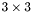
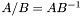
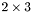
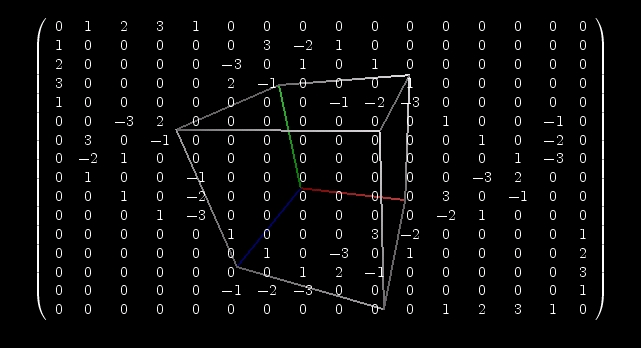
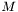
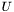
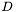
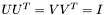
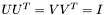

So far only simple matrix operations are implemented in CLUScript. Matrices where mainly implemented in order to show the connection between Clifford algebra and Matrices, i.e. linear algebra. It is also possible to visualize the range of  matrices.
For matrices the following operators are defined: addition +, subtraction and negation -, matrix multiplication *, transposition ~ and inversion !. If a matrix has no inverse the inversion operator returns the "next best" inverse, i.e. the pseudo-inverse. Matrix division / is also defined, whereby  , just as for multivectors.
A matrix is created with the function Matrix which expects either one or two parameters. If you call Matrix with a single parameter then this parameter has to be a nested list of order two, i.e. something like [[1,2], [3,4]]. Each sublist represents a row of the matrix. Matrices do not have to be square but each row must have the same number of elements. You may also call Matrix with two counter parameters. In that case the function returns a matrix of the given number of rows and columns, where every element is set to zero. For example, Matrix(2,3) returns a  null matrix.
You can also change the value of matrix components using the selection operator <tt>(). For example, given that M is a 3 by 3 matrix, the value of the matrix at row two and column three can be set to a particular value by writing M(2,3) = 5.2. Here is a code example,
?M = Matrix( [[1,2], [3,4]] );
M(1,2) = 10;
?M;
This produces the following output.
M = (| 1 2|, | 3 4|)
M = (| 1 10|, | 3 4|)
You can also extract the i'th row of a matrix by passing the row index as only parameter to the selection operator. That is, if M is a matrix variable, then M(2) returns the second row. For example,
?M = Matrix( [[1,2], [3,4]] );
?M(2);
produces the output
M = (| 1 2|, | 3 4|)
Constant = (| 3 4|)
A submatrix can be extracted by passing four parameters. If M is a matrix variable then M(i,j, m,n) returns the submatrix of M starting at row i and column j, and extending over m rows and n columns. A column of a matrix can thus be extracted via
?M = Matrix( [[1,2,3], [4,5,6], [7,8,9]] );
?M(1,2, 3,1);
gives
M = (| 1 2 3|, | 4 5 6|, | 7 8 9|)
Constant = (| 2|, | 5|, | 8|)
Just as for lists, it is also possible to extract a number of elements of a matrix at the same time using an index list. Here is an example,
?M = Matrix( [[1,2,3], [4,5,6], [7,8,9]] );
?M([ [1,2], Row 1, Col. 2
[3,1]] Row 3, Col. 1 );
which results in
M = (| 1 2 3|, | 4 5 6|, | 7 8 9|)
Constant = [2, 7]
In much the same way you can also extract a list of rows, or a list of submatrices.
?M = Matrix( [[1,2,3], [4,5,6], [7,8,9]] );
?M([ [1], Row 1
[3]] Row 3 );
?M([ [2,2,2,2], [1,1,2,2] ]);
produces the output
M = (| 1 2 3|, | 4 5 6|, | 7 8 9|)
Constant = [(| 1 2 3|), (| 7 8 9|)]
Constant = [(| 5 6|, | 8 9|), (| 1 2|, | 4 5|)]
Of course, you can also mix lists. For example, the script
?M = Matrix( [[1,2,3], [4,5,6], [7,8,9]] );
?M([ [1], Row 1
[2,3], Element Row 2, Col. 3
[1,2,3,1]] Second column
);
results in
M = (| 1 2 3|, | 4 5 6|, | 7 8 9|)
Constant = [(| 1 2 3|), 6, (| 2|, | 5|, | 8|)]
In section Operators so called point operators were introduced. In this section we will discuss their application with respect to matrices in some more detail. As always we will start with an example. The matrix product of two matrices is evaluated using the operator *. In some cases it is, however, useful to multiply two matrices element wise. This can be done with the point version of the product operator. Here is a code example.
?M1 = Matrix( [[1,2], [3,4]] );
?M2 = Matrix( [[1,0], [0,1]] );
?M1 * M2;
?M1 .* M2;
This produces the output
M1 <font size="12">(2x2)</font> = <font size="12">
.
</font>
M2 <font size="12">(2x2)</font> = <font size="12">
.
</font>
Constant <font size="12">(2x2)</font> = <font size="12">
.
</font>
Constant <font size="12">(2x2)</font> = <font size="12">
.
</font>
Note that there is a special behaviour for the point operators .* and ./ when the RHS matrix consists of a single column. In that case, the value of the RHS matrix in row i is applied to all elements in the same row of the LHS matrix. Here is an example.
?M1 = Matrix( [[1,2], [3,4]] );
?M2 = Matrix( [1,2] );
?M1 .* M2;
?M1 ./ M2;
This produces the output
M1 <font size="12">(2x2)</font> = <font size="12">
.
</font>
M2 <font size="12">(2x1)</font> = <font size="12">
.
</font>
Constant <font size="12">(2x2)</font> = <font size="12">
.
</font>
Constant <font size="12">(2x2)</font> = <font size="12">
.
</font>
The other point operators have the same element wise behaviour. Note that the point operators .+ and .- are equivalent to + and - when applied to matrices. The only other point operators that are useful for matrices are logic point operators, which will be discussed in the next section.
New in CLUScript v2.0 is the possibility to apply logic operators like !! and > to matrices. The standard logic operators are >, <, >=, <=, ==, !=. All of these can be applied between a matrix on the LHS and a scalar value on the RHS. The operators == and != can also be applied between two matrices. If a logic operator is applied between a matrix and a scalar, it is applied to each element of the matrix and the result of the logic operation is written into a new matrix. For example,
?M = Matrix( [[1,2], [3,4]] );
?M > 2;
?M < 2;
?M == 2;
?M != 2;
gives
M = (| 1 2|, | 3 4|)
Constant = (| 0 0|, | 1 1|)
Constant = (| 1 0|, | 0 0|)
Constant = (| 0 1|, | 0 0|)
Constant = (| 1 0|, | 1 1|)
The matrices that are returned from such a logic operation can be used to find the positions in a matrix where a logic condition is true. This is done with the function argtrue(), which returns all those positions of a matrix where the entries are not zero. For example,
gives
M = (| 1 2|, | 3 4|)
T = (| 0 0|, | 1 1|)
Constant = [[2, 1], [2, 2]]
We can then also extract just those values where a condition was true, since argtrue() returns an index list.
gives
M = (| 1 2|, | 3 4|)
Constant = [3, 4]
More complex logical conditions can be evaluated using the logic point operators .==, .!=, .<, .>, .<=, .>=, .&&,.||, and the logic operator <tt>!!. These point operators are applied between two matrices and evaluate their respective logic operation element wise. For example, suppose you are interested in those elements of a matrix that are greater than 2 and smaller or equal than 5. This can be evaluated as follows.
?M = Matrix( [[1,2,3], [4,5,6], [7,8,9]] );
? M > 2 .&& M <= 5;
gives
M = (| 1 2 3|, | 4 5 6|, | 7 8 9|)
Constant = (| 0 0 1|, | 1 1 0|, | 0 0 0|)
Note that the operator <tt>!! is applied element wise to matrices, whereby zero elements are set to unity, and all other elements are set to zero.
When you are working with large matrices, it can be quite helpful to print them as a whole. This is currently not possible in the output window. However, you can print a matrix in the visualization window using the Latex() and DrawLatex() functions. The function Latex() translates a matrix into a latex string, and the function DrawLatex() can draw that string using latex. Here is an example,
which produces the following visualization

Do not forget to force the rendering of latex when parsing this file by pressing ctrl + shift + p.
The singular value decomposition of a matrix has been implemented through the function SVD. This function expects a single parameter  , say, which is a matrix. It returns a variable list of three matrices in the order  ,  ,  , such that
, such that  and  . The columns of the three matrices , , are ordered such that the elements of are given in ascending order. The following example script can be found under
and  . The columns of the three matrices , , are ordered such that the elements of are given in ascending order. The following example script can be found under MatrixSVD.clu.
?M = Matrix( [[1,2], [3,4]] );
List = SVD(M);
?U = List(1);
D = List(2);
?V = List(3);
?Diag = [D(1,1), D(2,2)];
?U * D * ~V;
?U * ~U;
?V * ~V;
The eigenvalues and eigenvectors of a matrix can be evaluated with the function Eigen(). If you are only interested in the eigenvalues of a matrix, you can use the faster function EigenValues(). Internally both functions use LAPACK functions for the evaluation of eigenvectors and eigenvalues. Since in CLUScript complex numbers can not be represented, the real and imaginary parts of the eigenvalues and -vectors are returned separately in a list. Here is an example.
M = Matrix( [[1,2], [2,3]] );
?E = Eigen(M);
?Eval = E(1);
?Evec = E(3);
?Evec * ~Evec;
?M * Evec;
?Evec * Row2Diag(Eval);
which returns
E = [(| -0.236068 4.236068|), (| 0 0|), (| -0.850651 -0.525731|, | 0.525731 -0.850651|), (| 0 0|, | 0 0|)]
Eval = (| -0.236068 4.236068|)
Evec = (| -0.850651 -0.525731|, | 0.525731 -0.850651|)
Constant = (| 1 0|, | 0 1|)
Constant = (| 0.200811 -2.227033|, | -0.124108 -3.603415|)
Constant = (| 0.200811 -2.227033|, | -0.124108 -3.603415|)
The range of matrices can also be visualized. The visualization routine performs a singular value decomposition on the matrix and then draws the subspace spanned by those vectors in the matrix that have a non-zero corresponding singular value. To visualize a matrix simply use the colon operator. For example,